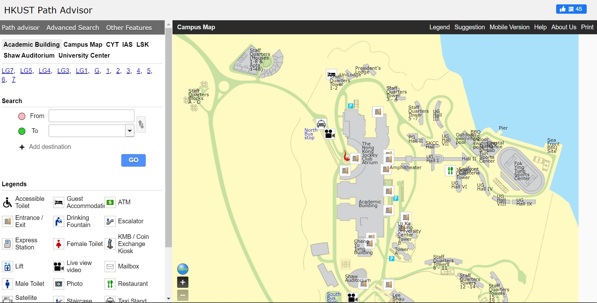
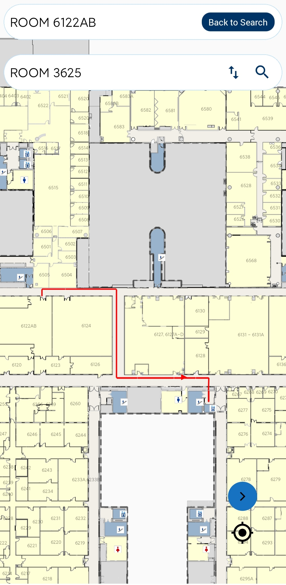

Comp 4461 Project 1 Description
COMP4461 Project 1 "If ___ on campus were more user-friendly…"
Deadline:
• Wed Feb 22 P0 Project group ready (5-6 people)
• Wed Feb 22 P1.0 Ad hoc group brainstorming in class
• Wed Feb22 P1.1 Submit mindmap from group brainstorming to TA
• Wed Mar 1 P1.2 In-class presentation and peer evaluation
• Wed Mar 1 P1.3 Launch and submit P1 personal portfolio page to Slack #project1-campus
(deadline 11:59pm HK time)
Project Description:
• Identify an object, a software, an equipment, a facility,
… on campus that the HKUST community wish to be (more) user-friendly.
• Collect user needs by talking to people in the HKUST community
before the in-class brainstorming session.
• Ideate about possible "user-friendly" alternatives of the "item" your group identify
and demonstrate the proposed designs and scenarios in storyboards.
• Note that Design should target a specified user scenario drawn from the brainstorming (P1.0)
results in class.
Flow of P1.2 Presentation (tentatively 8 min per group)
• Present your targeted scenario and users (derived from Feb 22)
o Needfinding activities and results (i.e., the POV)
o Ideation process (e.g., mindmap) and results (i.e., storyboards)
• Clarify your proposed problem
o Verify that it is real user needs that actually exist
• Clarify your proposed solutions
o How the designs proposed in the storyboards meet your design goal
(more user-friendly than the existing solution)
Criteria used in P1.2 in-class Peer + Expert Evaluation
• Well-met design goal(s)
• Valid / solid design choices and decisions
• User friendliness
• Appropriateness of the demonstrated "user-friendly" features
• Sustainability of the proposed solution / improvement
What is a Personal Portfolio Page (P1.3)?
Required (see examples in Slack #lab0-web channel)
• An overview page that introduces you and provides entrance to the individual project page(s)
• An individual project page to keep the personal diary for each of the three course projects
o Description of the project and your goal
o Your learning and execution process
(use images, videos, etc. as evidence to demonstrate each step you take)
o Your personal contributions and achievement at each milestone
o Your personal reflection (knowledge gained, lessons learned, etc.)
Grade Distribution (15pt)
• Group: storyboards + presentation (5pt, in-class evaluation)
• Individual:
o in-class brainstorming (5pt)
o portfolio page (5pt)
Project goal
The goal of our team is to find a solution to modify the Path Advisor so that it is more user-friendly
Learning
Project 1 helps me to perform the ideation process we have learned in lesson.
The purpose of ideation is to propose a potential problem some group of users might be facing and provide a solution.
Our team found that many of the students in HKUST are not satisfied with the current Path Advisor,
maily the outdated UI and poor navigation system.
Therefore, our team proposed to make improvement to the UI and deploy the AR navigation system as a solution to the user needs.
current Path Advisor UI (PC)
current Path Advisor UI (Mobile)
My contributions
Story Board drawing

reflection
Through this project, I gained the knowledge to collect user needs and make it into a story board.
Story board is a great tool to generalize the solution idea and present our ideas to the users in a clear manner.
Next time, I will try to gain the opinition from a wider variety of users, since we only interviewed HKUST students in this project.